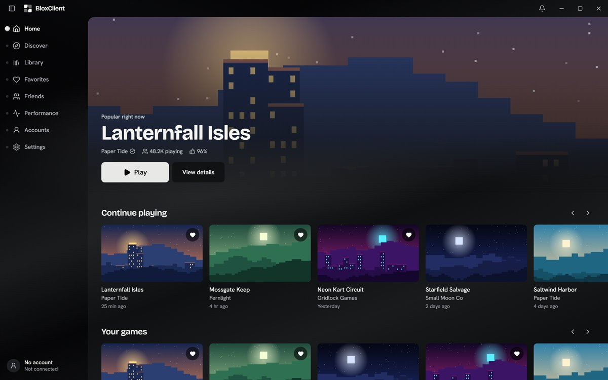
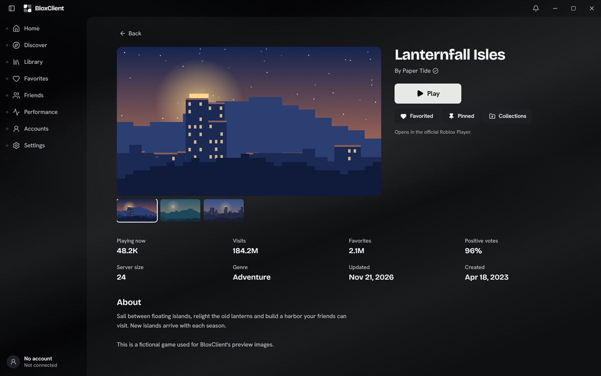
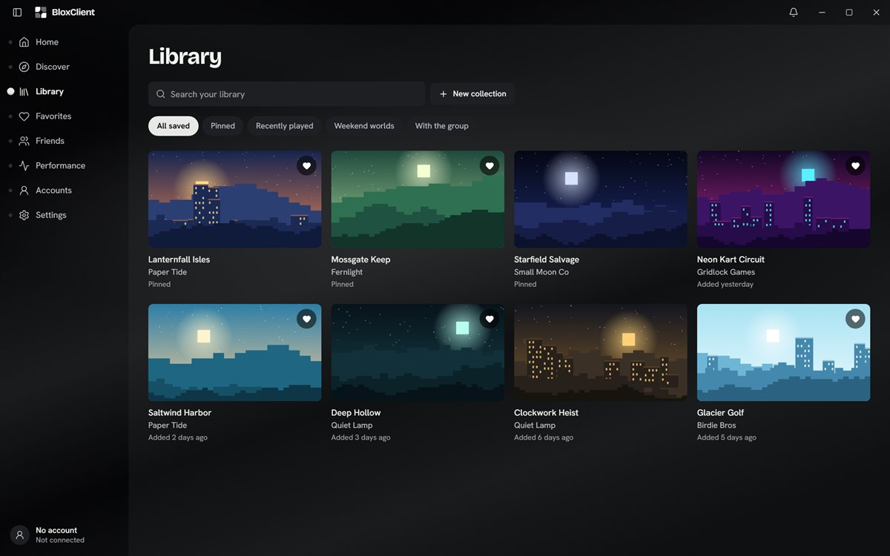
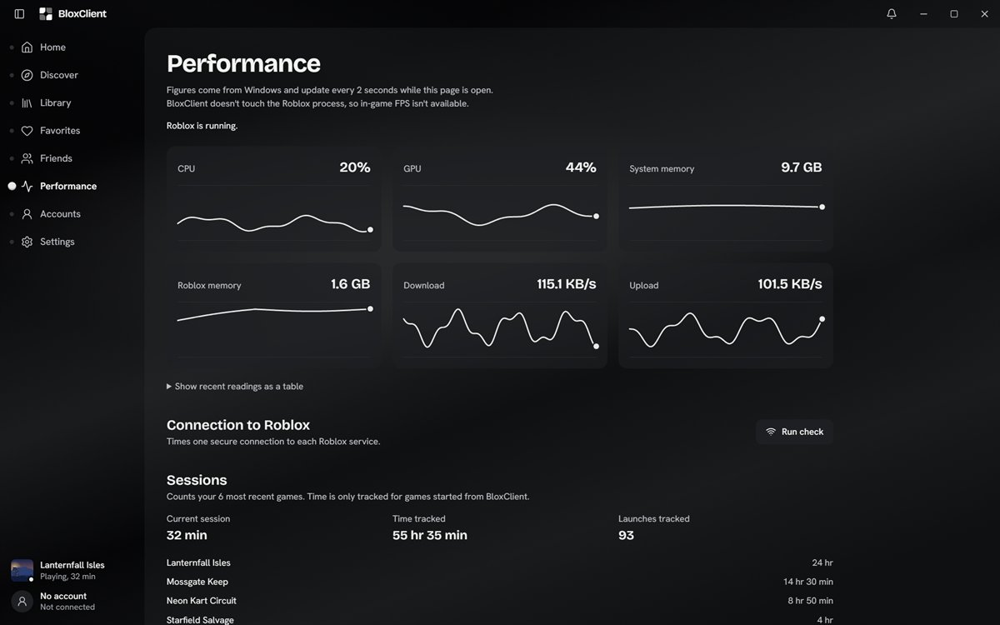
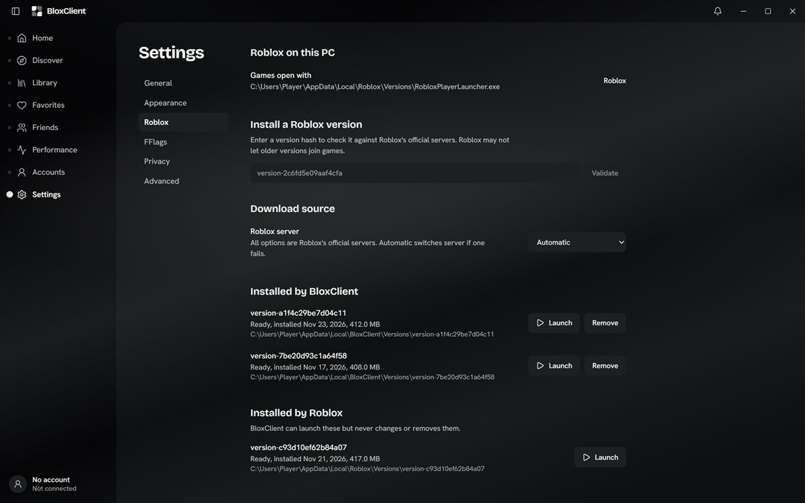
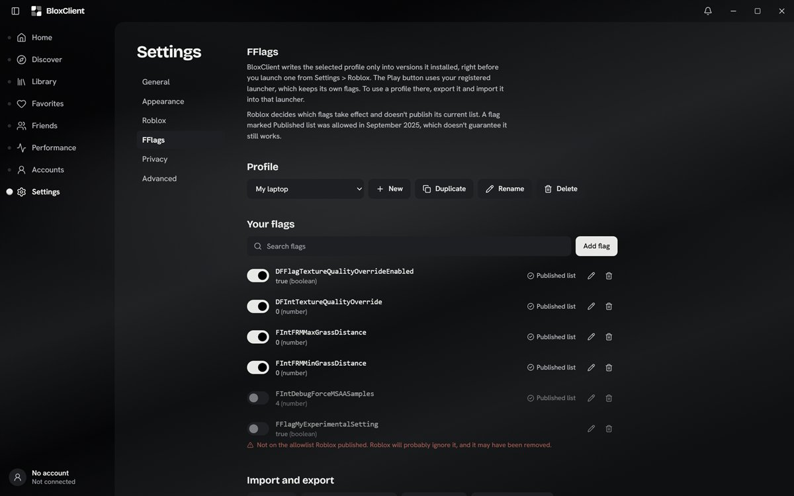

Skip the browser. Go straight to the game.
BloxClient is a Windows app for finding, saving and launching Roblox games. Press Play and your game opens in the official Roblox Player.
Download for WindowsVersion 0.2.0 for 64-bit Windows, 3 MB

Home puts a featured game, your recent games and your saved games on one page.
Preview images use made-up games and players.
Pick up where you left off
Continue playing lists your recent games, including ones you started outside BloxClient. One press and you're back in.

Keep your games in order
Pin the ones you play most and sort the rest into collections like "Weekend worlds". Your library stays on your PC.

See how your PC is coping
Watch CPU, GPU, memory, Roblox's memory use and network speed live. The readings come from Windows, so BloxClient never touches the game.

Room to tinker
Install a specific Roblox version from Roblox's own servers, with every file checked. Build FFlag profiles with backups, and get a warning when Roblox is likely to ignore a flag.


Your account stays yours
-
No password, no cookie
BloxClient never asks for your Roblox password or your .ROBLOSECURITY cookie. If any app does, don't paste it.
-
No changes to Roblox
It doesn't modify Roblox's files or change the versions Roblox installed.
-
No injection
It doesn't inject code into the game or interfere with Roblox's anti-cheat.
-
Official Player
Games open through the Roblox Player on your PC, the same way they do from the website.
Questions
Is BloxClient made by Roblox?
No. BloxClient is an independent app and isn't affiliated with or endorsed by Roblox Corporation.
Why does Windows show a security warning?
The installer isn't code-signed yet, so Windows may warn you that the publisher is unknown. Only download BloxClient from this site.
Can I sign in with my Roblox account?
Well, By OAuth it does allow some sort of log in, however features like friends and other features besides profile are not available.
Does it show in-game FPS And Performance?
Yes, Using the Overlay it allows you to measure real time data.
Do FFlags always work?
No. Roblox only applies flags on its allowlist and ignores the rest. BloxClient marks flags from the list Roblox published, but can't promise a flag still works.
Does it update itself?
Built in Auto Installer that reads if there is any new release and downloads it, However still not tested.
What do I need to run it?
A 64-bit Windows PC with the Roblox Player installed, Duh.
Get BloxClient for Windows
For 64-bit Windows, 3 MB. The installer isn't code-signed yet, so Windows may show a security warning. Choose More info, then Run anyway.